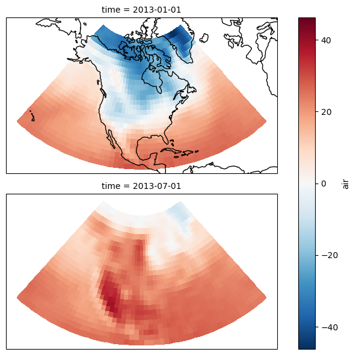

Data subsetting and plotting with earthaccess and xarray
Author
Luis Lopez and adapted by Eli Holmes
📘 Learning Objectives
How to crop a single data file
How to create a data cube with xarray
Extract variables, temporal slices, and spatial slices from an xarray dataset
Plot data and exclude data points via boolean conditions, using xarray, cartopy, and matplotlib
Summary
In this examples we will use the xarray and earthaccess to subset data and make figures.
Import Required Packages
# Suppress warningsimport warningswarnings.simplefilter('ignore')warnings.filterwarnings('ignore')from pprint import pprintimport earthaccessimport xarray as xrxr.set_options(display_expand_attrs=False)import matplotlib.pyplot as pltimport cartopy.crs as ccrsimport cartopy.feature as cfeature%matplotlib inline
Authenticate to NASA Earthdata
We will authenticate our Earthaccess session, and then open the results like we did in the Search & Discovery section.
auth = earthaccess.login()# are we authenticated?ifnot auth.authenticated:# ask for credentials and persist them in a .netrc file auth.login(strategy="interactive", persist=True)
Get a vector of urls to our nc files
short_name ='MUR-JPL-L4-GLOB-v4.1'version ="4.1"date_start ="2020-01-16"date_end ="2020-12-16"date_range = (date_start, date_end)# min lon, min lat, max lon, max latbbox = (-75.5, 33.5, -73.5, 35.5) # For reference (e.g., to visualize in https://geojson.io/), here is a GeoJSON representing the above bounding box:# {"type": "FeatureCollection", "features": [{"type": "Feature", "properties": {}, "geometry": {"type": "LineString", "bbox": [-127.0761, 31.6444, -113.9039, 42.631], "coordinates": [[-113.9039, 42.631], [-127.0761,42.631], [-127.0761, 31.6444], [-113.9039, 31.6444], [-113.9039, 42.631]]}}]}results = earthaccess.search_data( short_name = short_name, version = version, cloud_hosted =True, temporal = date_range, bounding_box = bbox,)
Granules found: 336
Crop and plot one netCDF file
Each MUR SST netCDF file is large so I do not want to download. Instead we will subset the data on the server side. We will start with one file.
Note that xarray works with “lazy” computation whenever possible. In this case, the metadata are loaded into JupyterHub memory, but the data arrays and their values are not — until there is a need for them.
Let’s print out all the variable names.
for v in ds.variables:print(v)
time
lat
lon
analysed_sst
analysis_error
mask
sea_ice_fraction
dt_1km_data
sst_anomaly
Of the variables listed above, we are interested in analysed_sst.
In addition to directly accessing the files archived and distributed by each of the NASA DAACs, many datasets also support services that allow us to customize the data via subsetting, reformatting, reprojection/regridding, and file aggregation. What does subsetting mean? To subset means to extract only the portions of a dataset that are needed for a given purpose.
There are three primary types of subsetting that we will walk through: 1. Temporal 2. Spatial 3. Variable
In each case, we will be excluding parts of the dataset that are not wanted using xarray. Note that “subsetting” is also called a data “transformation”.
estimated error standard deviation of analysed_sst
units :
kelvin
valid_min :
0
valid_max :
32767
comment :
uncertainty in "analysed_sst"
[647964000 values with dtype=float64]
mask
(time, lat, lon)
float32
...
long_name :
sea/land field composite mask
valid_min :
1
valid_max :
31
flag_masks :
[ 1 2 4 8 16]
flag_meanings :
open_sea land open_lake open_sea_with_ice_in_the_grid open_lake_with_ice_in_the_grid
comment :
mask can be used to further filter the data.
source :
GMT "grdlandmask", ice flag from sea_ice_fraction data
[647964000 values with dtype=float32]
sea_ice_fraction
(time, lat, lon)
float64
...
long_name :
sea ice area fraction
standard_name :
sea_ice_area_fraction
valid_min :
0
valid_max :
100
source :
EUMETSAT OSI-SAF, copyright EUMETSAT
comment :
ice fraction is a dimensionless quantity between 0 and 1; it has been interpolated by a nearest neighbor approach.
[647964000 values with dtype=float64]
dt_1km_data
(time, lat, lon)
timedelta64[ns]
...
long_name :
time to most recent 1km data
valid_min :
-127
valid_max :
127
source :
MODIS and VIIRS pixels ingested by MUR
comment :
The grid value is hours between the analysis time and the most recent MODIS or VIIRS 1km L2P datum within 0.01 degrees from the grid point. "Fill value" indicates absence of such 1km data at the grid point.
[647964000 values with dtype=timedelta64[ns]]
sst_anomaly
(time, lat, lon)
float64
...
long_name :
SST anomaly from a seasonal SST climatology based on the MUR data over 2003-2014 period
units :
kelvin
valid_min :
-32767
valid_max :
32767
comment :
anomaly reference to the day-of-year average between 2003 and 2014
Oceans > Ocean Temperature > Sea Surface Temperature
keywords_vocabulary :
NASA Global Change Master Directory (GCMD) Science Keywords
standard_name_vocabulary :
NetCDF Climate and Forecast (CF) Metadata Convention
southernmost_latitude :
-90.0
northernmost_latitude :
90.0
westernmost_longitude :
-180.0
easternmost_longitude :
180.0
spatial_resolution :
0.01 degrees
geospatial_lat_units :
degrees north
geospatial_lat_resolution :
0.01
geospatial_lon_units :
degrees east
geospatial_lon_resolution :
0.01
acknowledgment :
Please acknowledge the use of these data with the following statement: These data were provided by JPL under support by NASA MEaSUREs program.
creator_name :
JPL MUR SST project
creator_email :
ghrsst@podaac.jpl.nasa.gov
creator_url :
http://mur.jpl.nasa.gov
project :
NASA Making Earth Science Data Records for Use in Research Environments (MEaSUREs) Program
publisher_name :
GHRSST Project Office
publisher_url :
http://www.ghrsst.org
publisher_email :
ghrsst-po@nceo.ac.uk
processing_level :
L4
cdm_data_type :
grid
Now we will prepare a subset. We’re using essentially the same spatial bounds as above; however, as opposed to the earthaccess inputs above, here we must provide inputs in the formats expected by xarray. Instead of a single, four-element, bounding box, we use Python slice objects, which are defined by starting and ending numbers.
estimated error standard deviation of analysed_sst
units :
kelvin
valid_min :
0
valid_max :
32767
comment :
uncertainty in "analysed_sst"
[40401 values with dtype=float64]
mask
(time, lat, lon)
float32
...
long_name :
sea/land field composite mask
valid_min :
1
valid_max :
31
flag_masks :
[ 1 2 4 8 16]
flag_meanings :
open_sea land open_lake open_sea_with_ice_in_the_grid open_lake_with_ice_in_the_grid
comment :
mask can be used to further filter the data.
source :
GMT "grdlandmask", ice flag from sea_ice_fraction data
[40401 values with dtype=float32]
sea_ice_fraction
(time, lat, lon)
float64
...
long_name :
sea ice area fraction
standard_name :
sea_ice_area_fraction
valid_min :
0
valid_max :
100
source :
EUMETSAT OSI-SAF, copyright EUMETSAT
comment :
ice fraction is a dimensionless quantity between 0 and 1; it has been interpolated by a nearest neighbor approach.
[40401 values with dtype=float64]
dt_1km_data
(time, lat, lon)
timedelta64[ns]
...
long_name :
time to most recent 1km data
valid_min :
-127
valid_max :
127
source :
MODIS and VIIRS pixels ingested by MUR
comment :
The grid value is hours between the analysis time and the most recent MODIS or VIIRS 1km L2P datum within 0.01 degrees from the grid point. "Fill value" indicates absence of such 1km data at the grid point.
[40401 values with dtype=timedelta64[ns]]
sst_anomaly
(time, lat, lon)
float64
...
long_name :
SST anomaly from a seasonal SST climatology based on the MUR data over 2003-2014 period
units :
kelvin
valid_min :
-32767
valid_max :
32767
comment :
anomaly reference to the day-of-year average between 2003 and 2014
The grid value is hours between the analysis time and the most recent MODIS or VIIRS 1km L2P datum within 0.01 degrees from the grid point. "Fill value" indicates absence of such 1km data at the grid point.
In the following plotting commands, we utilize cartopy and matplotlib to generate a more customized figure.
cartopy is used to set the map projection (to PlateCarree) and to add U.S. state boundary lines to the figure. matplotlib’s pcolormesh is used to generate the color plot, with colors determined by the third argument’s value.
#ds_one['analysed_sst'].plot(x='lon', y='lat')p = ds_one['analysed_sst'].plot(transform=ccrs.PlateCarree(), aspect=ds.dims['lon'] / ds.dims['lat'], # for a sensible figsize subplot_kws={'projection': map_proj}) # the plot's projection
ValueError: cannot provide `aspect` argument without `size`
from __future__ import divisionimport xarray as xrimport cartopy.crs as ccrsimport matplotlib.pyplot as plt# Load the datads = xr.tutorial.load_dataset('air_temperature')air = ds.air.isel(time=[0, 724]) -273.15# This is the map projection we want to plot *onto*map_proj = ccrs.LambertConformal(central_longitude=-95, central_latitude=45)p = air.plot(transform=ccrs.PlateCarree(), # the data's projection col='time', col_wrap=1, # multiplot settings aspect=ds.dims['lon'] / ds.dims['lat'], # for a sensible figsize subplot_kws={'projection': map_proj}) # the plot's projection# We have to set the map's options on all four axesfor ax in p.axes.flat: ax.coastlines() ax.set_extent([-160, -30, 5, 75])# Without this aspect attributes the maps will look chaotic and the# "extent" attribute above will be ignored ax.set_aspect('equal', 'box-forced')plt.show()
ValueError: 'box-forced' is not a valid value for adjustable; supported values are 'box', 'datalim'

Notice the enhancements?
Also, note that you can explore these (and other) data before generating your own customized plots, by using NASA Worldview. Here’s a link to an example map on Worldview for these IMERG data.